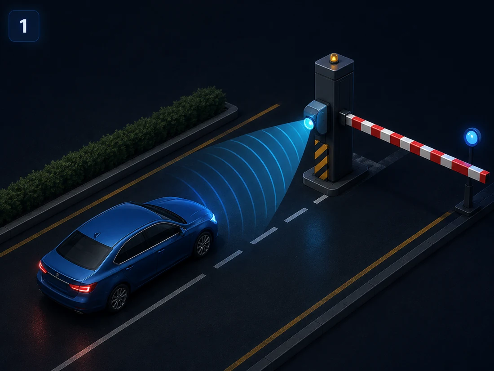
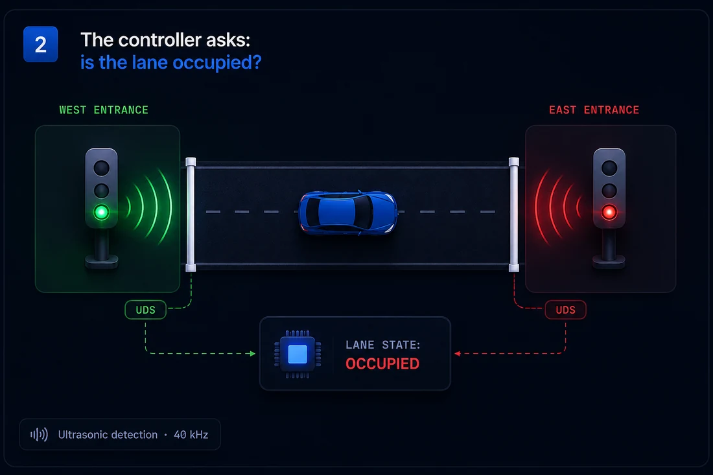
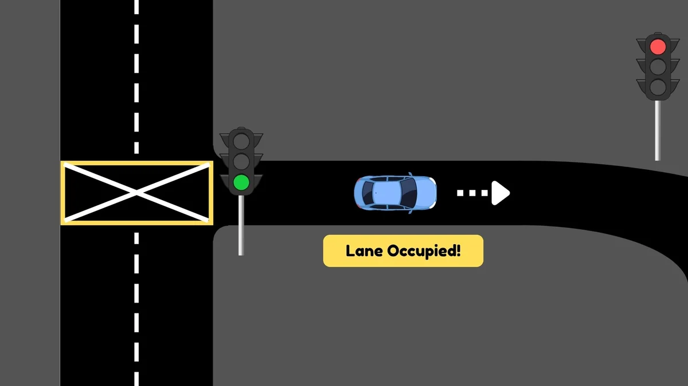
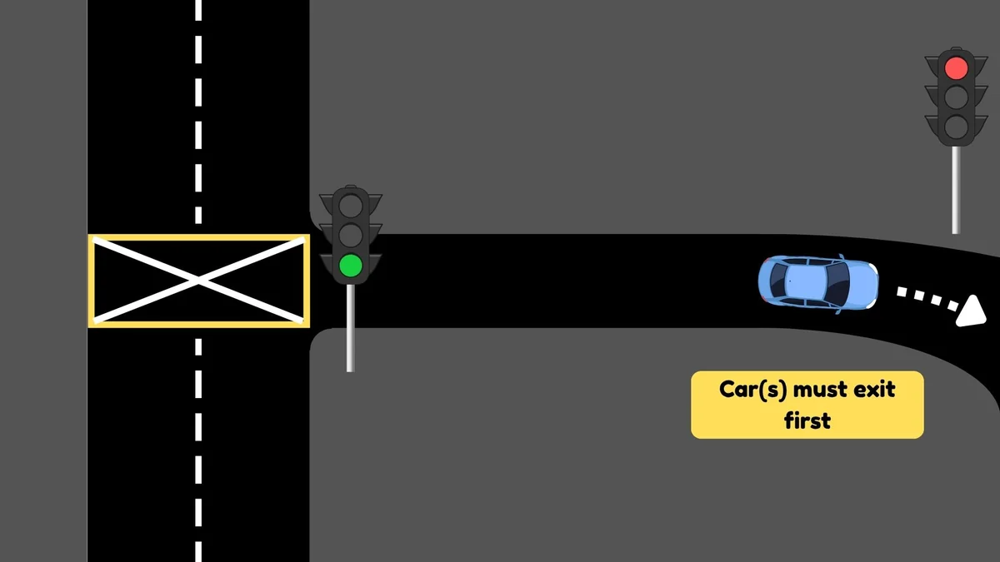
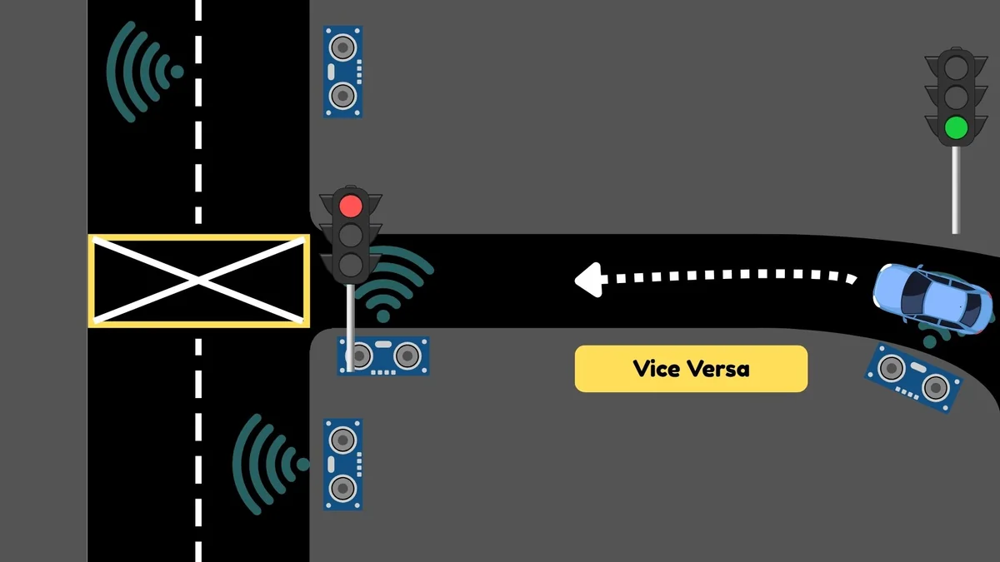
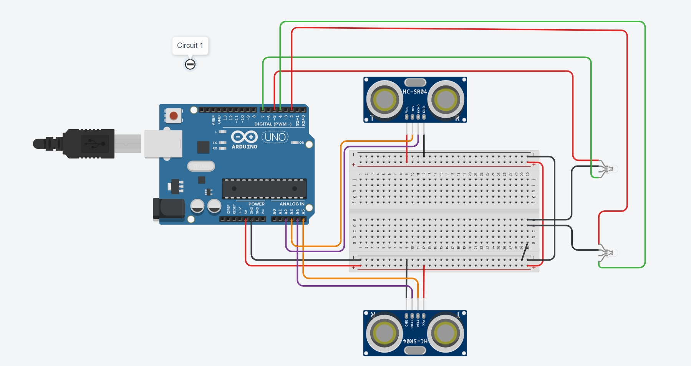
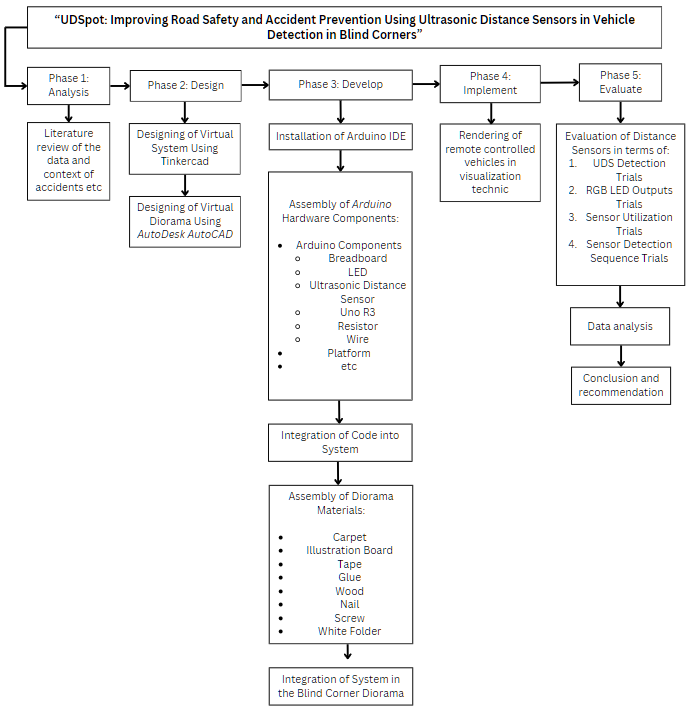
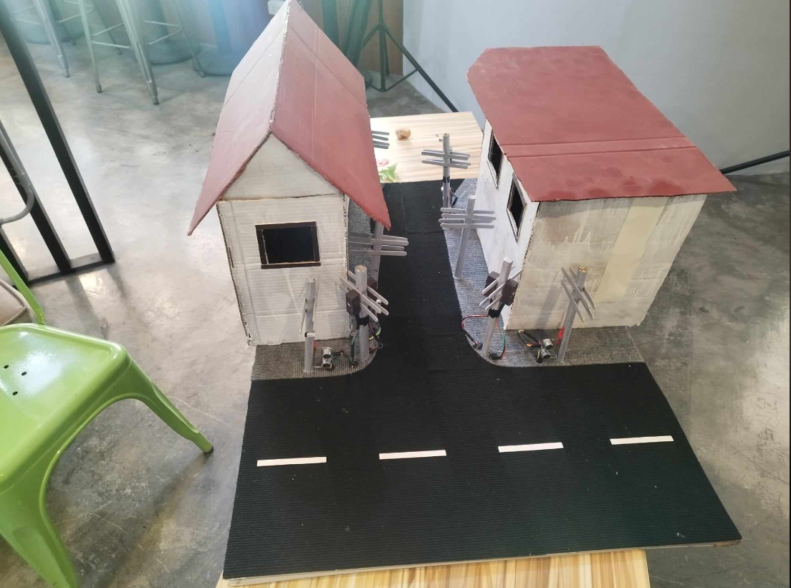
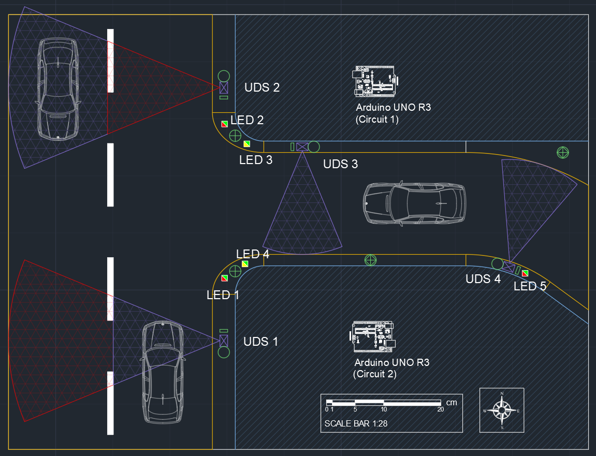

1
A vehicle arrives — the sensor sees it first
An ultrasonic distance sensor at the entrance fires a sound pulse. The echo tells the controller: something is waiting to enter.

UDSpot is an intelligent lane-occupancy system for narrow, two-way roads. Ultrasonic sensors watch both entrances, a controller decides, and traffic lights let one direction through at a time — so vehicles never meet in the middle.
This is not an intersection. It is a single lane shared by opposite traffic. When both directions enter at the same time, they meet in the middle — a deadlock no driver can break on their own.
Two vehicles enter at the same time… they meet mid-lane… no one can move.
The objective is simple: only one direction moves at any given moment — and the opposite side always waits.
Five steps, executed every time a vehicle approaches. Sensors detect, the controller decides, and the lights speak.
An ultrasonic distance sensor at the entrance fires a sound pulse. The echo tells the controller: something is waiting to enter.

The Arduino checks its live lane state. If a vehicle is already inside, the answer is YES and the entrance stays red. Otherwise the controller issues a green light.

The moment entry is allowed, the opposite entrance flips to red. There is never a gap where both directions could slip through.

While the vehicle travels through, the lane state is locked. Any vehicle at the far entrance sees red and holds its position. No exceptions.

Exit sensors on the far side watch the vehicle leave. Only then does the lane return to available — and the waiting side finally gets its green.

This is not a replay — it is a live controller. Click a button to make a vehicle approach from either entrance, then watch the sensors fire, the lights flip, and the decision log explain why. Send a second car mid-crossing and it will wait its turn.
Both vehicles enter the lane at the same time — both lights green. They meet head-on in the middle, front bumpers nearly touching, and neither can move.
West is green first, so the west car drives in and clears the lane. The east car holds at red — then gets the lane and proceeds safely, in turn.
Every part of the prototype earns its place in the coordination loop.
Arduino Uno R3. Reads every sensor, runs the occupancy logic, and flips the traffic lights — the entire decision loop lives here.
4 × Ultrasonic Distance Sensors. Two watch the entrances, two watch the exits — so the controller always knows who is waiting and when the lane is truly empty.
2 × RGB LED traffic lights. A language every driver already knows — green to enter, red to wait. One at each entrance.
Two TinkerCAD circuits. The sensor network, the LEDs, the resistors, and the Arduino wired in two integrated circuits — built and verified in TinkerCAD before assembly.


The diorama. A 101.6 × 76.2 cm physical model of the one-lane, two-way road — roads at 1:28 scale, remote-controlled vehicles at 1:24, and six exact traffic scenarios.


Photos and diagrams from the research paper — full details inside the PDF.
Every headline number below comes from actual trials in the physical diorama — three runs per test, no rounding of the truth.
The ultrasonic sensors caught every approaching vehicle, every single run.
Every green, red, and amber state matched exactly what the controller should have shown.
Without UDSpot the lane deadlocked in 4 of 6 scenarios. With it — six for six.
Standoff = two vehicles locked in the one-lane road, unable to proceed. Six scenarios, two 1:24 RC cars.
Created as the senior Project Capstone of the Science, Technology, Engineering, and Mathematics strand.
Adviser Ms. Maria Aubelle C. Floranda, LPT, MAT
Panel Dr. Silk Dela Paz · Mr. Jojo Potenciano · Ms. Nenet Ayson
Special thanks — Mr. Bernie F. Engada (diorama & circuitry) · Mr. Seth Plata (coding)
Every table, every code, every reference — as presented to the panel at Elizabeth Seton School — South.